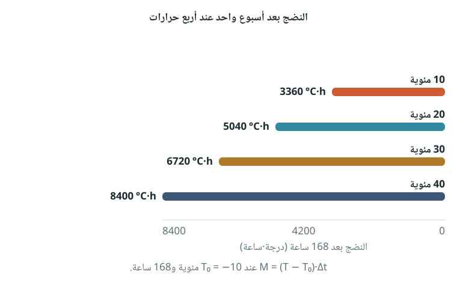

نضج الخرسانة يُقاس بالزمن مضروبًا في الحرارة
Concrete maturity: time multiplied by temperature
خرسانة في 30 مئوية تكتسب في أسبوع ما تكتسبه أخرى في 20 مئوية في عشرة أيام ونصف. طريقة النضج تحوّل منحنى القوة إلى رقم واحد: (الحرارة − عتبة) × الساعات.
قوة الخرسانة لا تنمو بالساعة وحدها بل بالتفاعل الكيميائي، وهو أسرع في الدفء وأبطأ في البرد. تحت عتبة نحو 10 درجات مئوية تحت الصفر يتوقف التفاعل عمليًا، وفوقها يتراكم «نضج» يمكن مقارنته بين صبّتين مختلفتين. بهذا يمكن فكّ الشدّة قبل الموعد التقويمي حين يكون الجو حارًّا، وإبقاؤها أطول حين يبرد.
الآلية
كيف يحدث الأمر على مستوى الجسيمات أو المتغيّرات المباشرة
الإماهة تُستهلك فيها المياه مع الأسمنت لتُبنى منتجات تُلصق الحصى. معدّل الإماهة يتبع حرارة الخلطة نفسها لا حرارة الهواء، وحرارة الخلطة تنتج من حرارة الصبّ وحرارة الإماهة المتولّدة داخليًا. المقطع السميك يسخن من داخله فينضج أسرع من سطحه، ولهذا تُؤخذ القراءة من أكثر من نقطة.
الأرقام والوحدات
العلاقات والوحدات والنطاقات العددية التي تسند الشرح
النضج = (T − T₀) × Δt عند T₀ = −10 مئوية. أسبوع واحد: عند 10 مئوية يُنتج 3,360 درجة·ساعة، وعند 20 يُنتج 5,040، وعند 30 يُنتج 6,720، وعند 40 يُنتج 8,400. لبلوغ 5,040 درجة·ساعة يكفي 5 أيام عند 30 مئوية، أو 10.5 يوم عند 10 مئوية — فرق يقصّر الجدول الزمني أو يمنع فكّ شدّة مبكرًا.
الفرق الدقيق
المفهوم الملتبس الذي يُخلَط به، وأين ينفصلان
النضج مؤشر تقدّم لا شهادة قوة: الرقم يقول إن الخلطة تفاعلت بقدر خلطة مرجعية، ولا يقول إن القوة المطلوبة تحققت إلا بمقارنة مع منحنى معاير لنفس التركيبة. خلطتان بتركيبتين مختلفتين ورقم نضج واحد لا تعنيان القوة نفسها.
حدود التعريف
أين ينكسر التعريف أو النموذج وما الذي لا يفسّره
الطريقة لا تصلح للصبّ في البرد الشديد إلا بنموذج أدقّ يأخذ الحرارة الفعّالة، ولا تصلح حين تجفّ الخرسانة أو تتجمّد. وتحتاج سجل حرارة موزّعًا لا متوسطًا: سطح بارد ونواة ساخنة يعطيان رقمًا مضلّلًا لو اكتُفي بمتوسط.

| الكمية | القيمة | المصدر |
|---|---|---|
| نضج أسبوع عند 20 مئوية | 5040 °C·h | [1] |
| نضج أسبوع عند 30 مئوية | 6720 °C·h | [1] |
| الزمن المكافئ عند 30 مئوية لبلوغ نضج 20 مئوية | 5.2 يوم | [2] |
| عتبة التوقف المرجعية | -10 °C | [3] |
المصادر
- 1 Engineering ToolBox — Concrete Properties — Engineering ToolBox. www.engineeringtoolbox.com/concrete-properties-d_1223.html · اطُّلع عليه 2026-11-16
- 2 OpenStax, College Physics 2e — Temperature Change and Heat Capacity — OpenStax. openstax.org/books/college-physics-2e/pages/14-2-temperature-change-and-heat-capacity · اطُّلع عليه 2026-11-16
- 3 NIST — SI Units: Temperature — NIST. www.nist.gov/pml/owm/si-units-temperature · اطُّلع عليه 2026-11-16
راجعه: مراجعة آلية — ديوان المعرفة (أرقام محسوبة + مصادر متحققة) 2026-11-16 · 2026-11-16 · آخر تحديث 2026-11-16
رجوع إلى المقالات